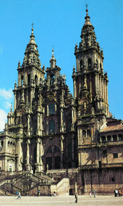

Lezione 8  Crociate
Crociate

LAS NAVAS DE TOLOSA
1212: Vittoria decisiva dei crociati e principi spagnoli a Las Navas de Tolosa.LISBONA
XII secolo: il Portogallo diventa indipendente sotto la protezione della Chiesa.
SANTIAGO DE COMPOSTELA
Gli echi della Reconquista spagnola giungono in tutta Europa grazie ai pellegrini che si recano a Santiago de Compostela. La cattedrale di Santiago era, ed è tuttora, una delle mete più importanti per i pellegrini di tutto l’Occidente. Capolavoro dell’architettura romanica, fu compiuta nel XII secolo, ma subì nei secoli successivi alcuni interventi che ne modificarono in parte l’aspetto.